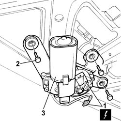

5050C42 REAR WIPER MOTOR - R+R
- Path
- Procedures > 50 AUXILIARY UNITS > 5050 SCREEN WASHERS AND HEADLAMP WASH/WIPE > 5050C REAR WASH/WIPE > 5050C42 REAR WIPER MOTOR - R+R
- Kind
- repair procedure (removal / refitting; the operation number is the code)
- Applies to
- all engines; all production periods
- Interactive page
- https://sloeber94.github.io/elrnDB-fUlss/en/#/179007510
Applies to: all engines; all production periods
 Removing
Removing
 Refitting
RefittingOp. 5530B56 BATTERY DRIP TRAY COVER - R.R.
- Disconnect the negative battery terminal.
Op. 5050C34 REAR WIPER ARM WITH BLADE - R+R
- Detach the inner tailgate panel.
1. Disconnect the electrical connection.
2. Undo the retaining bolts.
3. Remove the rear windscreen wiper motor.

Applies to: all engines; all production periods
Refitting
Removing- Position the rear windscreen wiper motor.
- Tighten the retaining bolts.
- Connect the electrical connection.
- Reattach the inner tailgate panel.
Op. 5050C34 REAR WIPER ARM WITH BLADE - R+R
- Connect the negative battery terminal.